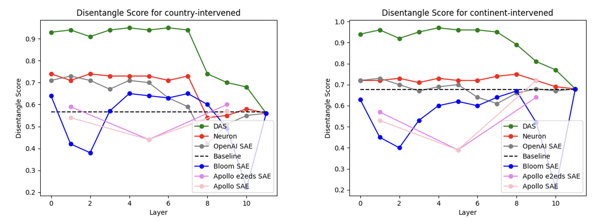
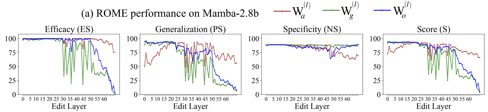
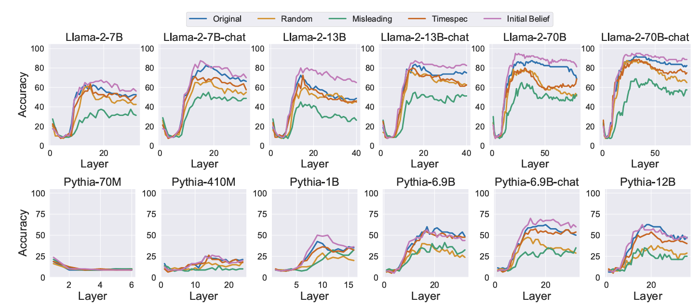
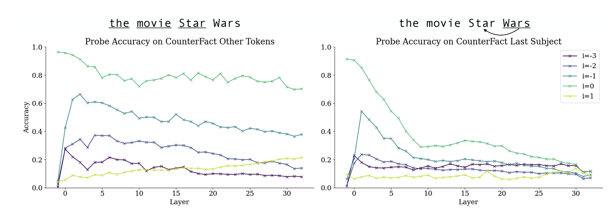
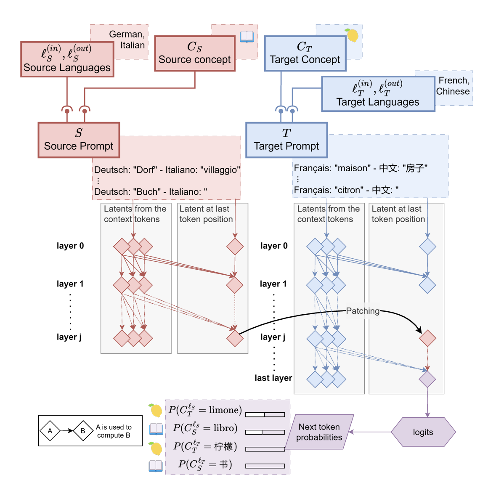
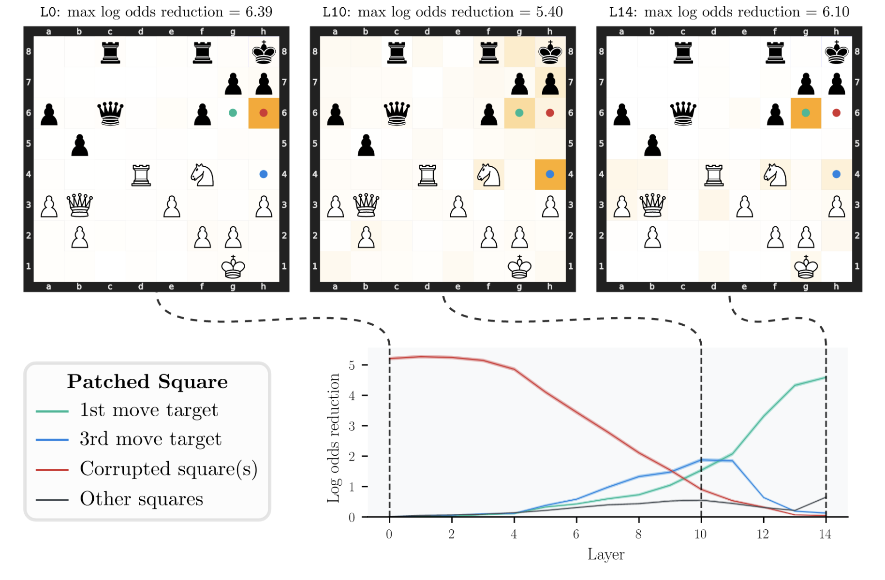
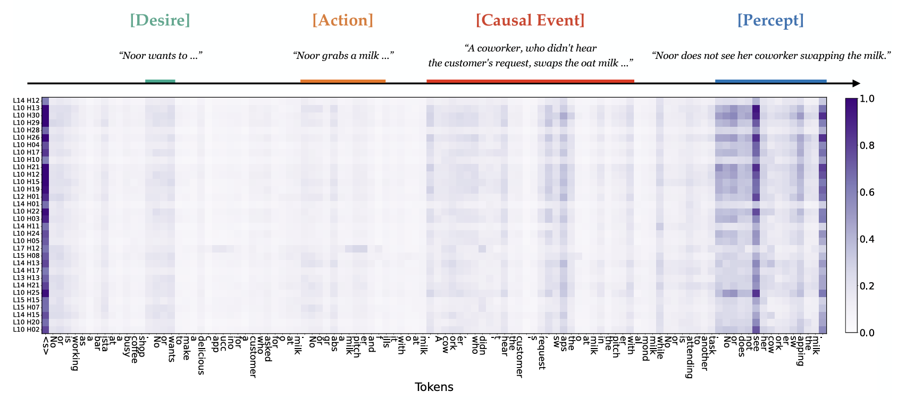

Citing NDIF
If you use NNsight or NDIF resources in your research, please cite the following:
Citation
Jaden Fried Fiotto-Kaufman, Alexander Russell Loftus, Eric Todd, Jannik Brinkmann, Koyena Pal, Dmitrii Troitskii, Michael Ripa, Adam Belfki, Can Rager, Caden Juang, Aaron Mueller, Samuel Marks, Arnab Sen Sharma, Francesca Lucchetti, Nikhil Prakash, Carla E. Brodley, Arjun Guha, Jonathan Bell, Byron C Wallace, and David Bau. "NNsight and NDIF: Democratizing Access to Foundation Model Internals," ICLR 2025. Available at https://openreview.net/forum?id=MxbEiFRf39.
BibTex
@inproceedings{fiotto-kaufman2025nnsight,
title={{NNsight} and {NDIF}: Democratizing Access to Foundation Model Internals},
author={Jaden Fried Fiotto-Kaufman and Alexander Russell Loftus and Eric Todd and Jannik Brinkmann and Koyena Pal and Dmitrii Troitskii and Michael Ripa and Adam Belfki and Can Rager and Caden Juang and Aaron Mueller and Samuel Marks and Arnab Sen Sharma and Francesca Lucchetti and Nikhil Prakash and Carla E. Brodley and Arjun Guha and Jonathan Bell and Byron C Wallace and David Bau},
booktitle={The Thirteenth International Conference on Learning Representations},
year={2025},
url={https://openreview.net/forum?id=MxbEiFRf39}
}
In addition, when you publish work using NNsight or NDIF resources, we'd love you to email us directly at info@ndif.us to tell us about your work. This helps us track our impact and supports our continued efforts to provide open-source resources for reproducible and transparent research on large-scale AI systems.
Research Using NDIF

Maheep Chaudhary, Atticus Geiger.
Evaluating Open-Source Sparse Autoencoders on Disentangling Factual Knowledge in GPT-2 Small.
Evaluates the utility of high-dimensional sparse autoencoders (SAEs) for causal analysis in mechanistic
interpretability, using the RAVEL benchmark on GPT-2 small. Compares four SAEs to neurons as a baseline
and linear features learned via distributed alignment search (DAS) as a skyline. Findings indicate that
SAEs struggle to match the neuron baseline and fall significantly short of the DAS skyline in
distinguishing between knowledge of a city's country and continent.

Arnab Sen Sharma, David Atkinson, David Bau.
Locating and Editing Factual Associations in Mamba.
Investigates factual recall mechanisms in the Mamba state space model, comparing it to autoregressive transformer models.
Finds that key components responsible for factual recall are localized in middle layers and at specific token positions,
mirroring patterns seen in transformers. Demonstrates that rank-one model editing can insert facts at particular locations
and adapts attention-knockout techniques to analyze information flow. Despite architectural differences,
the study concludes that Mamba and transformer models share significant similarities in factual recall processes.

Matteo Bortoletto, Constantin Ruhdorfer, Lei Shi, Andreas Bulling.
Benchmarking Mental State Representations in Language Models.
Conducts a benchmark study on the internal representation of mental states in language models,
analyzing different model sizes, fine-tuning strategies, and prompt designs. Finds that the
quality of belief representations improves with model size and fine-tuning but is sensitive to
prompt variations. Extends previous activation editing experiments, showing that reasoning
performance can be improved by steering model activations without training probes.
First to investigate the impact of prompt variations on probing performance in Theory of Mind tasks.

Sheridan Feucht, David Atkinson, Byron Wallace, David Bau.
Token Erasure as a Footprint of Implicit Vocabulary Items in LLMs.
Investigates how LLMs transform arbitrary groups of tokens into higher-level representations,
focusing on multi-token words and named entities. Identifies a pronounced "erasure" effect where
information about previous tokens is quickly forgotten in early layers. Proposes a method to
probe the implicit vocabulary of LLMs by analyzing token representation changes across layers,
providing results for Llama-2-7b and Llama-3-8B. This study represents the first effort to explore
the implicit vocabulary of LLMs.

Clément Dumas, Veniamin Veselovsky, Giovanni Monea, Robert West, Chris Wendler.
How do Llamas process multilingual text? A latent exploration through activation patching.
Analyzes Llama-2's forward pass during word translation tasks to explore whether it develops
language-agnostic concept representations. Shows that language encoding occurs earlier than
concept encoding and that activation patching can independently alter either the concept or
the language. Demonstrates that averaging latents across languages does not hinder translation
performance, providing evidence for universal concept representation in multilingual models.

Erik Jenner, Shreyas Kapur, Vasil Georgiev, Cameron Allen, Scott Emmons, Stuart Russell.
Evidence of Learned Look-Ahead in a Chess-Playing Neural Network.
Presents evidence of learned look-ahead in the policy network of Leela Chess Zero,
showing that it internally represents future optimal moves, which are critical in
certain board states. Demonstrates through activations, attention heads, and a
probing model that neural networks can predict optimal moves ahead, providing a basis
for understanding learned algorithmic capabilities in neural networks.

Wentao Zhu, Zhining Zhang, Yizhou Wang.
Language Models Represent Beliefs of Self and Others.
Investigates the presence of Theory of Mind (ToM) abilities in large language models,
identifying internal representations of self and others' beliefs through neural activations.
Shows that manipulating these representations significantly alters ToM performance,
highlighting their importance in social reasoning. Extends findings to various social
reasoning tasks involving causal inference.